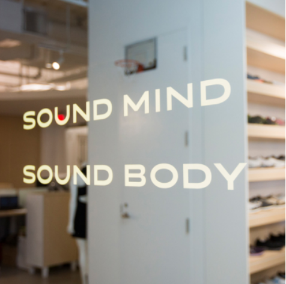
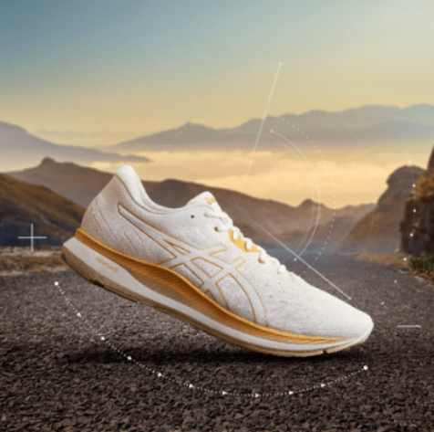
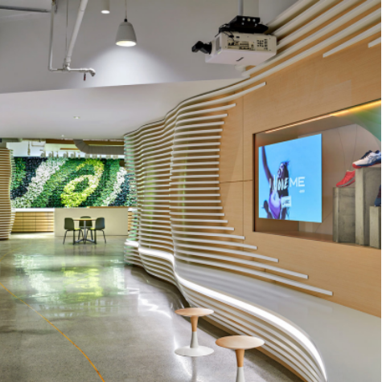

INVESTOR RELATIONS
ASICS Growth Plan 2020 has been developed to maximize our global performance.

PRESS CENTER
Visit our Press Center to keep updated with ASICS news

SUSTAINAVILITY
Through our products and services, we aim to contribute to a healthy society. By integrating sustainability into every aspect of our business, we aim not only to create value for our customers and shareholders, but also for the world around us.

CAREER
Reach out to the world and grow as one team.
ASICS Global - The Official Corporate. ASICS Global - The Official Corporate ASICS Global - The Official Corporate Website for ASICS and Its Affiliates.ASICS Global - The Official Corporate Website for ASICS and Its Affiliates August’s top 100 most visited U.S. websites list showed an upswing in traffic compared to last month. Only 13 of the 100 sites saw traffic downturns, and only 4 of those sites saw decreases above 10%. Of the top 100, 61% showed double or triple digit growth.As usual, Google, YouTube, and Facebook remained the top three most visited sites. Each showed traffic increases in the low double-digits with Google and Youtube growing 17%, and The majority of sites from last month’s top 10 remained in place, though we witnessed a few notable shifts in August. Yahoo jumped from position 10 to 5 with an impressive 92% increase in month-over-month growth. And though Apple saw no increase in traffic month-to-month, they seem to have regained their balance after a 51% loss in July.ASICS Global - The Official Corporate Website for ASICS and Its Affiliates.ASICS Global - The Official Corporate Website for ASICS and Its Affiliates August’s top 100 most visited U.S. websites list showed an upswing in traffic compared to last month. Only 13 of the 100 sites saw traffic downturns, and only 4 of those sites saw decreases above 10%. Of the top 100, 61% showed double or triple digit growth.As usual, Google, YouTube, and Facebook remained the top three most visited sites. Each showed traffic increases in the low double-digits with Google and Youtube growing 17%, and The majority of sites from last month’s top 10 remained in place, though we witnessed a few notable shifts in August. Yahoo jumped from position 10 to 5 with an impressive 92% increase in month-over-month growth. And though Apple saw no increase in traffic month-to-month, they seem to have regained their balance after a 51% loss in July.ASICS Global - The Official Corporate Website for ASICS and Its Affiliates.ASICS Global - The Official Corporate Website for ASICS and Its Affiliates August’s top 100 most visited U.S. websites list showed an upswing in traffic compared to last month. Only 13 of the 100 sites saw traffic downturns, and only 4 of those sites saw decreases above 10%. Of the top 100, 61% showed double or triple digit growth.As usual, Google, YouTube, and Facebook remained the top three most visited sites. Each showed traffic increases in the low double-digits with Google and Youtube growing 17%, and The majority of sites from last month’s top 10 remained in place, though we witnessed a few notable shifts in August. Yahoo jumped from position 10 to 5 with an impressive 92% increase in month-over-month growth. And though Apple saw no increase in traffic month-to-month, they seem to have regained their balance after a 51% loss in July.ASICS Global - The Official Corporate Website for ASICS and Its Affiliates.ASICS Global - The Official Corporate Website for ASICS and Its Affiliates August’s top 100 most visited U.S. websites list showed an upswing in traffic compared to last month. Only 13 of the 100 sites saw traffic downturns, and only 4 of those sites saw decreases above 10%. Of the top 100, 61% showed double or triple digit growth.As usual, Google, YouTube, and Facebook remained the top three most visited sites. Each showed traffic increases in the low double-digits with Google and Youtube growing 17%, and The majority of sites from last month’s top 10 remained in place, though we witnessed a few notable shifts in August. Yahoo jumped from position 10 to 5 with an impressive 92% increase in month-over-month growth. And though Apple saw no increase in traffic month-to-month, they seem to have regained their balance after a 51% loss in July.
The History of ASICS
Kihachiro Onitsuka Founds Onitsuka Co., Ltd.
Mr. Kihachiro Onitsuka establishes ONITSUKA Shokai in Kobe 1949. In the same year, the company is reorgazinezed as ONITSUKA Co., Ltd.with four employees and a capitalization of 300,000 yen.